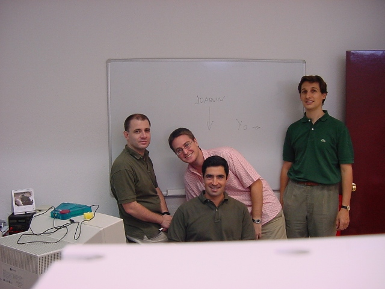
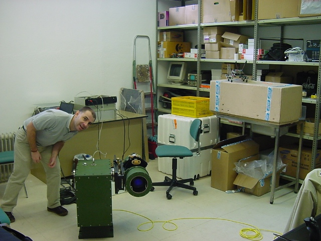
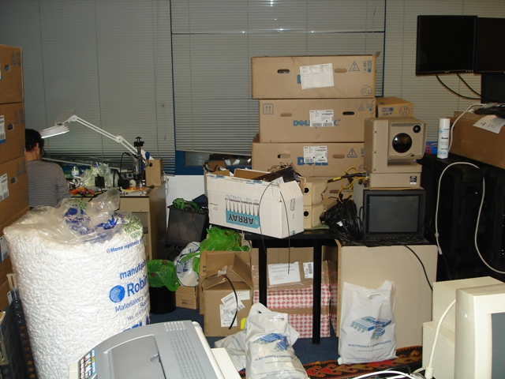
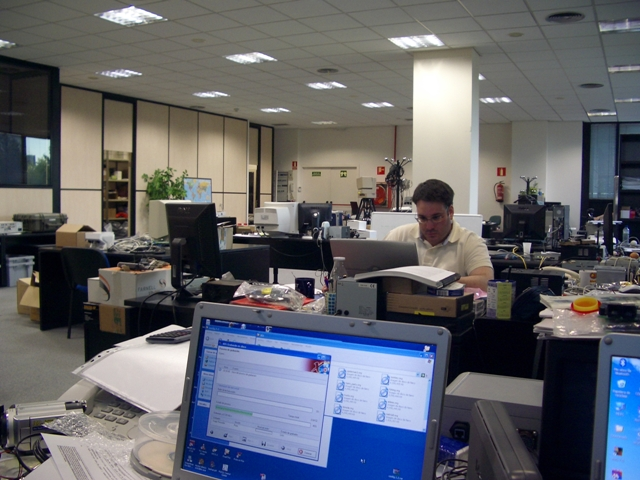
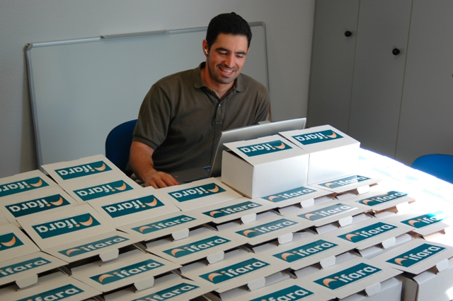

El 8 de Abril de 2008 se ha producido la venta de Ifara Tecnologías, s.l. a FLIR Systems , empresa líder mundial en la fabricación de cámaras térmicas y cliente de Ifara desde sus comienzos.
Se puede decir que la historia de Ifara es la típica del garaje, empezamos un equipo de 5 personas hace poco más de 5 años en una oficina del centro empresarial de Alcobendas.


De esa nos fuimos a una oficina más grande, pero pronto se quedo pequeña…

Finalmente, al cabo de 5 años, de mucho trabajo y esfuerzo, estábamos en Diversia en una oficina agradable y con espacio!!! con una plantilla de 14 personas.

Ahora hemos pasado a ser su división de Servicios Profesionales, es decir el Front-End de ingeniería para los proyectos de integración de sensores. La verdad es que pinta bien pero da nostalgia 😉
Tal y como expongo en mi web personal, mediante Ifara se ha comercializado la familia de productos relacionados con el robot Skybot y se han fomentado los talleres y las charlas de robótica. Eso sí, siempre respetando el carácter abierto del contenido publicado en esta WEB, siendo Ifara, al final, nuestro medio de financiación y de facturación.

Con esta adquisición hemos tomado la decisión de separar esa actividad de FLIR Systems y la hemos traspasado a Quark Robotics para seguir teniendo el control de ella. Seguimos siendo los mismos pero con otra razón social. Mira por donde esto del hardware libre tiene esas ventajas 🙂
En este enlace podéis ver la nota de prensa publicada por FLIR Systems para sus accionistas:
y dado que es una empresa que cotiza en el Nasdaq todos podéis formar parte de ella
Andrés Prieto-Moreno
Vaya, qué sorpresa…
Me lo comentó Alejandro y ahora leyéndolo me da penilla hasta a mi…
Habéis empezado de cero, habéis crecido y ahora sois parte de una Gran Empresa… ¡Tenéis que estar realmente orgullosos por esta hazaña! Habéis vivido y seguís viviendo de vuestro sueño, de vuestra creación…
¡Muchas Felicidades!
Os veré pronto.
ENHORABUENAAAAAAA A TODOS!!!!!!!!!!!!
Yo no lo digiero todavía Arsenio.
No me lo puedo creer, pero se que con lo inteligente que eres tenías que llegar a algo grande.
MUCHISIMAS FELICIDADES y ya no hay excusa para que te vengas a las Islas Canarias un fin de semana. !!!!!!!!!!
salu2alex